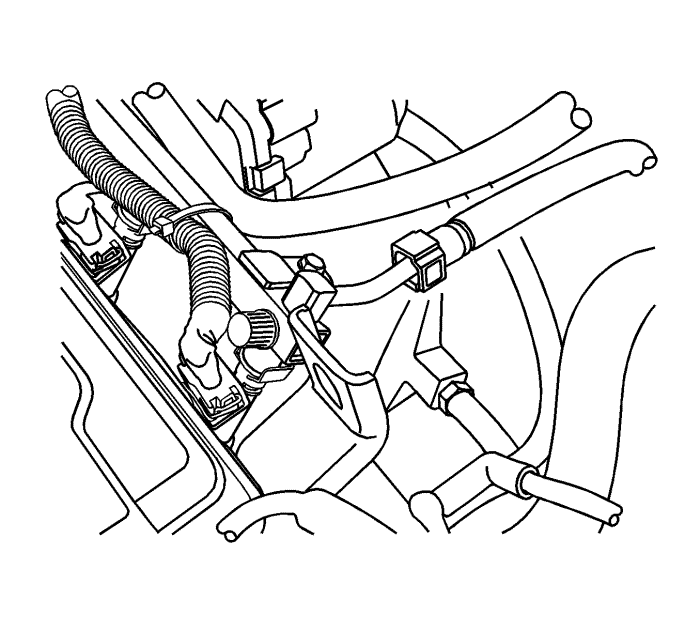
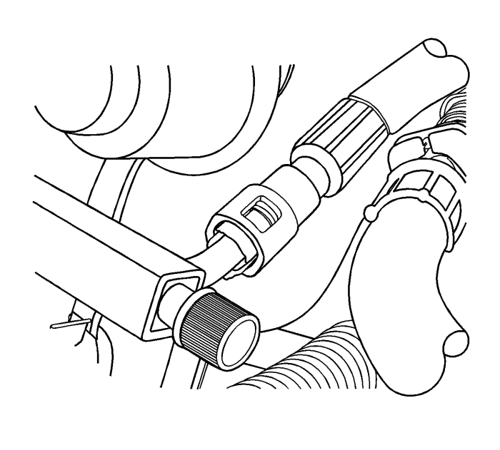
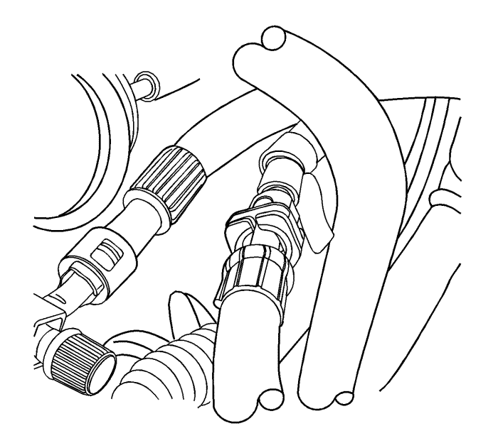
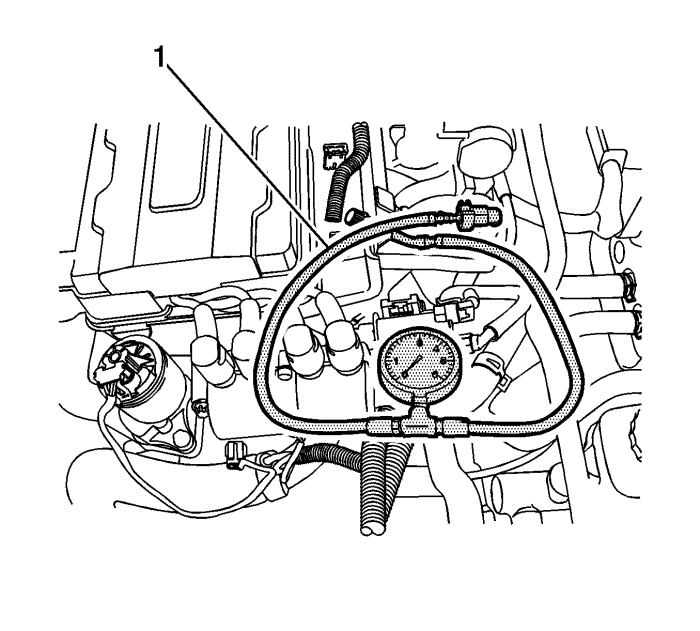

Montaje y desmontaje del manómetro de combustible — LD9
Herramientas especiales
EN-34730-91 Comprobador de la presión de combustible
Si desea informarse sobre herramientas regionales equivalentes, consultar Herramientas especiales .
Procedimiento de montaje

Advertencia : A fin de reducir el riesgo de lesiones personales, quite el tapón del depósito de combustible y libere la presión del sistema de combustible antes de reparar dicho sistema. Una vez liberada la presión, es posible que salga una pequeña cantidad de combustible al reparar las tuberías, la bomba de inyección o las conexiones de combustible. Para reducir el riesgo de lesiones personales, tape los componentes del sistema de combustible con una toalla de taller antes de desconectar nada. Así se contendrá el combustible que pueda salir. Una vez finalizada la desconexión, coloque la toalla en un recipiente adecuado.
- Despresurice el sistema de combustible. Consultar Descarga de la presión del combustible : Sin CH 48027-100 → CH 48027-100 .
- Desconecte la tubería de alimentación de combustible de la rampa de inyectores.

- Conecte el conector del manómetro de presión de combustible al tubo de distribución del combustible.

- Conecte el conector del manómetro de presión de combustible al tubo de alimentación.

- Compruebe si hay fugas de combustible.
- Lea la medición del indicador EN-34730-91(1). La presión de combustible normal se sitúa entre 402 kPa (58,3 psi) y 418 kPa (60,0 psi).
- Despresurice el combustible. Consultar Descarga de la presión del combustible : Sin CH 48027-100 → CH 48027-100 .
Procedimiento de desmontaje
- Desmonte la herramienta de retención EN-34730-91 (1).
- Meta la tubería alimentación de combustible en el tubo de distribución del combustible.
- Encienda el motor y verifique que no haya una fuga de combustible.
| © Copyright Chevrolet Europe. All rights reserved |